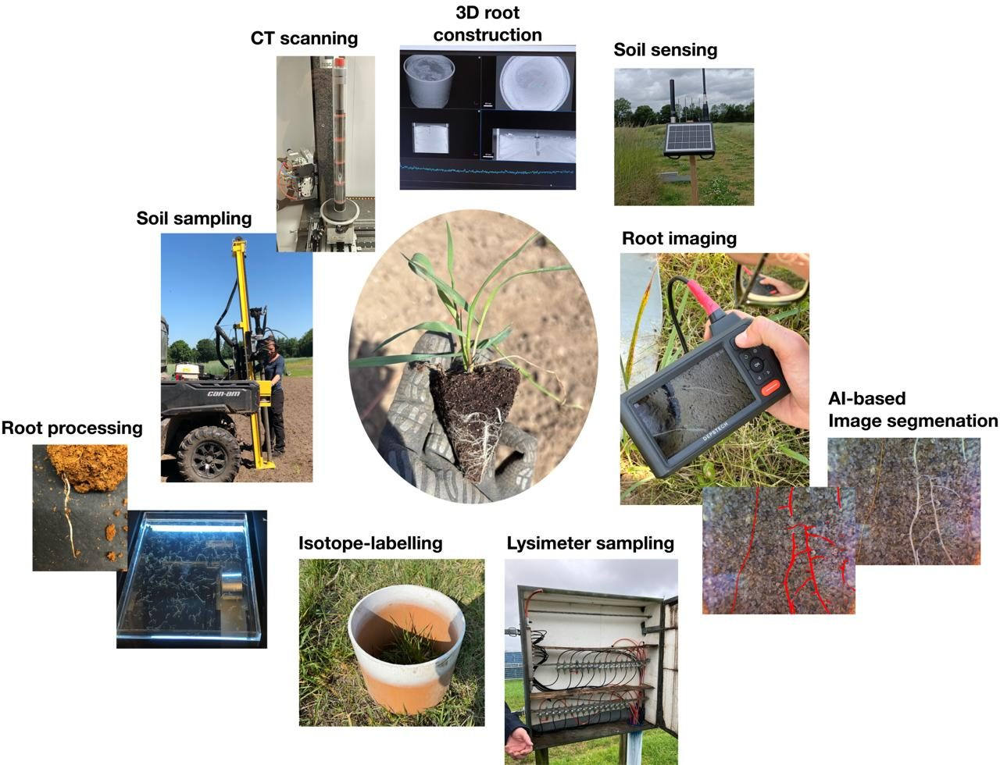
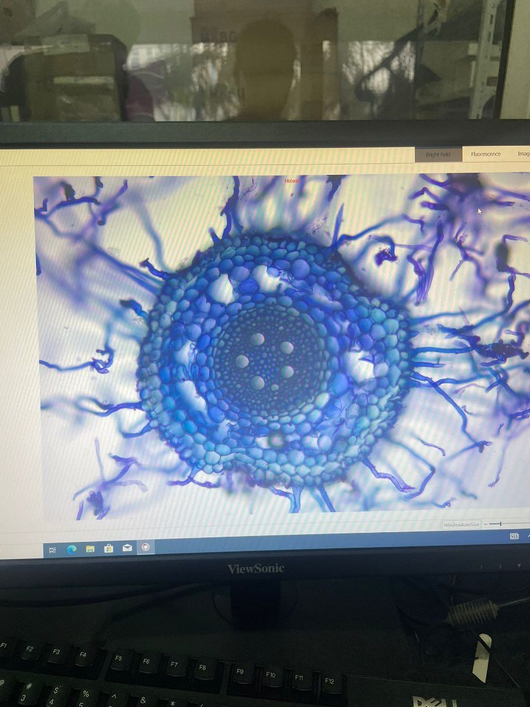
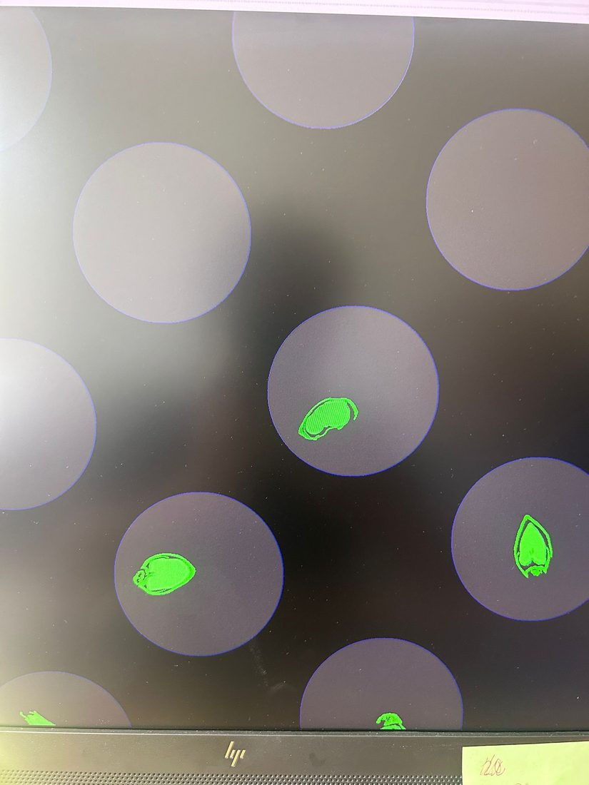
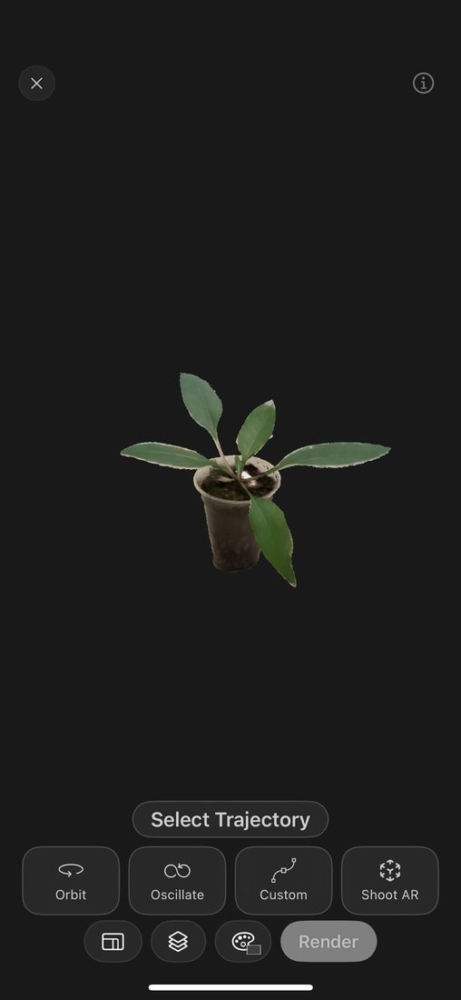
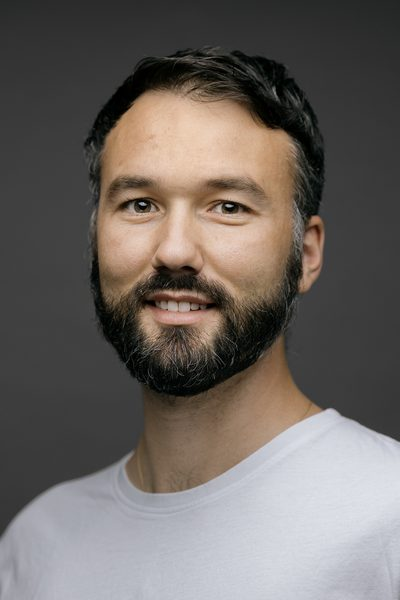
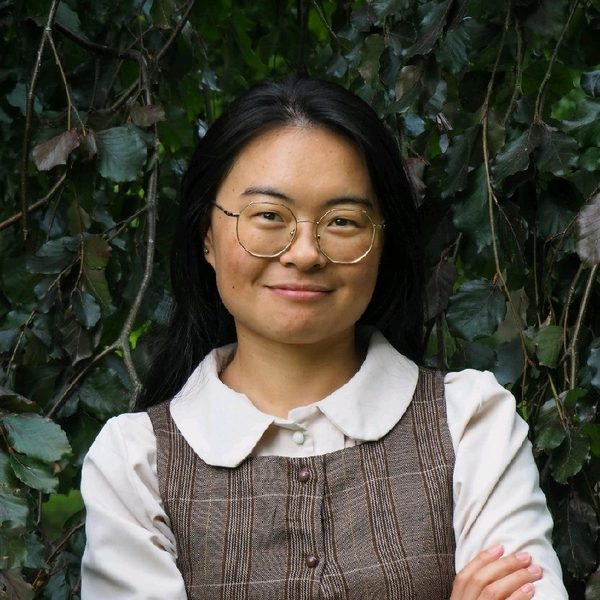
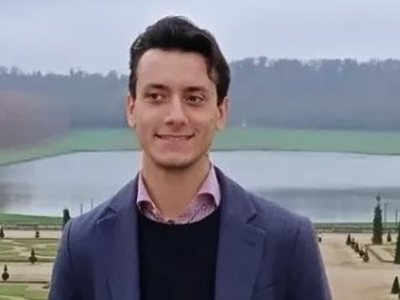
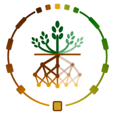

01 · Research
Research
01
Root Science
Roots drive how crops perform, yet we know surprisingly little about them, so we ask how root structure, chemistry and function shape crop production underneath.
Roots are hard to see, so we build the tools to see them: field coring, minirhizotrons, microCT, spectroscopy and automated image analysis. We study roots in intact soil and real fields, and link what they look like, what they are made of and what they do to water and nutrient uptake, drought resilience and carbon storage. See Projects (e.g. RootVision). We also teach these methods to other researchers in our biennial RootMethods PhD course. Check our publication linking root structural and functional capacity under field conditions by Eusun (Han et al., 2026).
02
Plant Phenomics
We measure plants at scale so that hidden traits can be used in research and breeding - Imaging, sensors and machine learning turn field and lab data into traits we can understand, predict and select for.
We combine RGB, multispectral and hyperspectral imaging, UAVs, 3D imaging and machine learning to track plants above and below ground. One question drives us: can early, non-destructive measurements predict how a plant splits its energy between grain and roots? Follow it in Projects (e.g. PerennialTraits, RootPheno). Check in Publications on a novel root mixture analysis exploiting spectroscopy by our Postdoc Marco (Lombardi et al., 2025).
03
Perennial Agronomy
We work on perennial grain crops and cropping systems that yield grain year after year while keeping living roots in the soil, with benefits for soil, water, carbon and farm resilience.
What if the field never had to be replanted? We study perennial grains, especially intermediate wheatgrass, in long-term field trials: how they establish, root, overwinter and yield, and what they do for soil, water and nitrogen. See Projects (e.g. PerennialSystems, DeepWater, PerennialTraits) and our Publications on process-based modelling by our Postdoc Yulin (Zhang et al., 2026) and ecosystem services by our PhD student Alexa (Peterson et al., 2026).
02 · Projects
Projects & field sites
5 perennial grain species · 4 years · 3 field trials
Intermediate wheatgrass
Sainfoin
Silphium
Perennial cereal rye
Perennial wheat
PerennialTraits
01We are developing novel perennial crops that produce grain for people year after year, without re-sowing. Their deep root systems make farming more sustainable and more resilient to climate change.
Project page →RootVision
02The RootVision project seeks to overcome these limitations by developing a new root phenotyping tool that can differentiate between species in crop mixtures using advanced spectroscopy and high detection of multiple root traits.
Project page →PerennialHybrids
03In this project we are comparing genotypes of perennial grain hybrids (e.g. perennial wheat) for their perenniality (e.g. regeneration) using metabolomics and plant phenotyping.
Project page →RootPheno
04We propose developing advanced root phenotyping capacity by creating two data-driven pipelines that can be used by non-data specialists, such as crop and soil researchers.
Project page →DeepWater
05This project investigates how deep-root traits in perennial grain crops enhance water-use efficiency and resilience under variable climates.
Project page →PerennialSystems
06This project aims to advance our understanding of agronomic practices for perennial grain crops and their potential multipurpose applications in comparison to annual cropping systems.
Project page →03 · Methods
Methods & tools
Our evolving root methods manual →
Root image segmentation
Deep-learning segmentation (RootPainter) turns root images into measurable traits.
primary
1st-order lateral
2nd-order lateral
Isotope labelling
Tracers placed in deep soil layers show which crops take up nutrients from where.
Phenotyping
3D plant phenotyping system, drones, hyperspectral and micro-CT imaging, LiCOR photosynthesis measurements.
Facilities
Semi-field facility, greenhouse and growth chambers.




04 · People
People
Principal investigator
Eusun Han
Associate Professor of Perennial Cropping Systems
My research focuses on root systems as drivers of crop performance and sustainability, integrating agronomy, root biology, and digital phenotyping. Over the past decade, I have developed experimental, analytical, and conceptual approaches that make root structure, function, and dynamics measurable under realistic field conditions. Since joining Aarhus University, I have extended this expertise to establish perennial grain crops as a new, independent research direction.
eusun.han@agro.au.dk Full profile →
Marco LombardiPostdoc · RootVisionRoot diversity in crop mixtures, molecular root studiesEmail
Shoujiao LiPostdoc · PerennialTraitsSoil organic carbon, microbial biomass, PLFA analysisEmail
Michele CancianiPostdoc · GrassConnectDrone and hyperspectral imaging, grassland mixtures05 · Publications
Selected publications
2026
Deep roots through time and crops: insight from five seasons at DeepRootLab
2026
Root development and water availability in dual-purpose wheat
2024
Temporary growth cessation of wheat roots following defoliation
06 · News
News
Sep 2026
Yulin Zhang's review paper has been published! - Requirements and challenges of process-based modeling for intermediate wheatgrass, a perennial cerealLearn more →
Sep 2026
Alexa Peterson's 1st paper from her PhD work was published!: Ecosystem services of perennial grain cropsLearn more →
Sep 2026Our lab website is now open!
07 · Join us
Join us
Come join us next summer! Hosting students to help with activities on a range of topics!
Site visits, long-term research stays and questions are all welcome.
Say hello at eusun.han@agro.au.dk
Root Methods PhD course (Coming 2028)
A PhD course on root research methods, taught by the lab and colleagues.
08 · Contact

Eusun Han Lab Department of Agroecology, Aarhus UniversityEmaileusun.han@agro.au.dk
AddressBlichers Allé 20, 8830, Tjele, Denmark